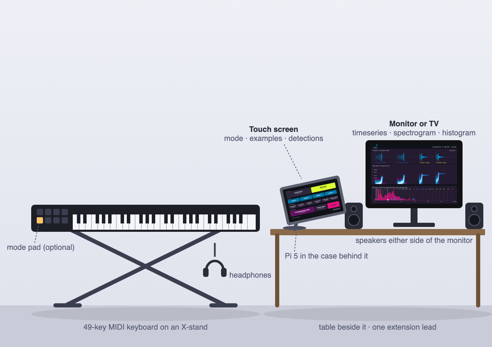

<title>GW Piano Stand: setup</title>
<meta name="claude:viewport-fit-sides" content="cover">
<link rel="stylesheet" href="theme.css">
<style>
/* Layout: single reading column; wiring diagram and parts table scroll inside their own containers */
:root{
  --g-bg:#f5f6fa; --g-surface:var(--white); --g-fg:#161a2b; --g-muted:#5a6078; --g-line:#d9dce8;
  --sci:var(--brand-blue); --mus:var(--highlight-pink); --accent:var(--brand-purple);
  --display:var(--font-heading); --body:var(--font-body); --mono:ui-monospace,SFMono-Regular,Menlo,monospace; color-scheme:light;
}
@media (prefers-color-scheme:dark){:root:not([data-theme="light"]){
  --g-bg:var(--bg); --g-surface:var(--panel); --g-fg:var(--text); --g-muted:var(--muted); --g-line:var(--line);
  --sci:var(--brand-blue-bright); --mus:var(--highlight-pink); --accent:var(--highlight); color-scheme:dark}}
:root[data-theme="dark"]{
  --g-bg:var(--bg); --g-surface:var(--panel); --g-fg:var(--text); --g-muted:var(--muted); --g-line:var(--line);
  --sci:var(--brand-blue-bright); --mus:var(--highlight-pink); --accent:var(--highlight); color-scheme:dark}
body{background:var(--g-bg);color:var(--g-fg);font:16px/1.6 var(--body)}
main{max-width:860px;margin:0 auto;padding-block:40px 64px;padding-left:max(16px,env(safe-area-inset-left,0px));padding-right:max(16px,env(safe-area-inset-right,0px));display:grid;gap:40px}
h1,h2,h3{font-family:var(--display);font-weight:var(--weight-heading);text-wrap:balance;margin:0;line-height:1.2}
h1{font-size:2.4rem}h2{font-size:1.5rem}h3{font-size:1.1rem}
section{display:grid;gap:14px;min-width:0}
p,li{max-width:68ch;margin:0}
ul,ol{margin:0;padding-left:1.3em;display:grid;gap:6px}
.lede{color:var(--g-muted);font-size:1.1rem}
.eyebrow{font:600 .75rem var(--body);letter-spacing:.08em;text-transform:uppercase;color:var(--accent)}
code,pre{font-family:var(--mono);font-size:.85rem}
code{background:var(--g-surface);border:1px solid var(--g-line);border-radius:4px;padding:1px 5px}
pre{background:var(--g-surface);border:1px solid var(--g-line);border-radius:8px;padding:14px;overflow-x:auto;margin:0;line-height:1.5}
pre code{border:0;padding:0;background:none}
.modes{display:grid;grid-template-columns:repeat(auto-fit,minmax(240px,1fr));gap:12px}
.mode{border:1px solid var(--g-line);border-radius:10px;padding:16px;background:var(--g-surface);display:grid;gap:6px}
.mode b{font-family:var(--display);font-size:1.1rem}
.mode.sci{border-top:4px solid var(--sci)}.mode.mus{border-top:4px solid var(--mus)}
.scroll{overflow-x:auto;border:1px solid var(--g-line);border-radius:10px;background:var(--g-surface)}
table{border-collapse:collapse;width:100%;min-width:420px;font-size:.92rem}
th,td{text-align:left;padding:10px 12px;border-bottom:1px solid var(--g-line);vertical-align:top}
th{font:600 .75rem var(--body);letter-spacing:.06em;text-transform:uppercase;color:var(--g-muted)}
td.num{font-variant-numeric:tabular-nums;white-space:nowrap}
tfoot td{font-weight:600;border-bottom:0}
.tag{display:inline-block;font-size:.72rem;font-weight:600;padding:1px 7px;border-radius:99px;border:1px solid var(--g-line);color:var(--g-muted)}
.note{border-left:3px solid var(--accent);padding:4px 0 4px 14px;color:var(--g-muted)}
svg text{fill:var(--g-fg);font:13px var(--body)}
svg .sub{fill:var(--g-muted);font-size:11px}
svg .box{fill:var(--g-surface);stroke:var(--g-line);stroke-width:1.5}
svg .wire{stroke:var(--g-muted);stroke-width:1.5;fill:none}
svg .audio{stroke:var(--accent)}
a{color:var(--accent)}
</style>

<main>
<header style="display:grid;gap:10px">
  <span class="eyebrow">Outreach stand · one-off setup</span>
  <h1>GW Piano Stand: setup</h1>
  <p class="lede">A standalone keyboard instrument. Each key plays an IMRPhenomD chirp from an equal-mass black-hole binary, and one button switches between scientific and musical sounds. A Raspberry Pi 5 runs everything and needs no laptop. It drives a small touch screen showing the current mode and a larger screen showing a live timeseries, spectrogram and mass histogram as keys are pressed.</p>
  <p class="note">This page covers the parts and the one-off technical setup. For running the stand at an event, see <a href="stand-day.html">On the day</a>.</p>
</header>

<section>
  <h2>The stand</h2>
  
  <p>The keyboard sits at standing height on an X-stand. The touch screen, with the Pi on its back, and a monitor stand on a table beside it (see <a href="#parts">Placing the screens</a>). Two small speakers sit on the table either side of the monitor, angled at the player, and headphones hang from the stand. A table in front can hold printed mass cards, so visitors can find "their" black hole on the histogram.</p>
</section>

<section>
  <h2>How it connects</h2>
  <div class="scroll">
  <svg viewBox="0 0 820 300" width="820" role="img" aria-label="Wiring: keyboard USB to Pi 5; Pi DSI to mode screen; Pi HDMI to waveform screen; USB audio interface line out to powered speakers">
    <rect class="box" x="20" y="120" width="170" height="64" rx="8"/>
    <text x="36" y="148">49-key MIDI keyboard</text><text class="sub" x="36" y="168">keys (+ optional mode pad)</text>
    <rect class="box" x="300" y="100" width="200" height="104" rx="8"/>
    <text x="316" y="128">Raspberry Pi 5</text><text class="sub" x="316" y="148">Chromium kiosk: sound + visuals</text><text class="sub" x="316" y="166">2 pages: live + controls</text><text class="sub" x="316" y="184">USB audio interface</text>
    <rect class="box" x="610" y="20" width="190" height="64" rx="8"/>
    <text x="626" y="48">Touch screen</text><text class="sub" x="626" y="68">mode screen</text>
    <rect class="box" x="610" y="120" width="190" height="64" rx="8"/>
    <text x="626" y="148">Larger screen</text><text class="sub" x="626" y="168">waveform + histogram</text>
    <rect class="box" x="610" y="220" width="190" height="64" rx="8"/>
    <text x="626" y="248">Powered speakers</text><text class="sub" x="626" y="268">line in (RCA/3.5 mm)</text>
    <path class="wire" d="M190 152 H300"/><text class="sub" x="214" y="144">USB (MIDI + power)</text>
    <path class="wire" d="M500 120 C560 120 560 52 610 52"/><text class="sub" x="520" y="78">DSI ribbon</text>
    <path class="wire" d="M500 152 H610"/><text class="sub" x="520" y="144">micro-HDMI</text>
    <path class="wire audio" d="M500 186 C560 186 560 252 610 252"/><text class="sub" x="516" y="236">line out</text>
  </svg>
  </div>
  <p class="note">The Pi 5 has no headphone jack, so audio comes from a small USB audio interface. It keeps the top of the Pi clear for the cooler, needs no configuration, and can be tested on any laptop. The touch screen uses the DSI ribbon, which leaves both micro-HDMI ports free.</p>
</section>

<section>
  <h2 id="parts">Parts list</h2>
  <p>Each row lists the features the part needs; any product with those features will do.</p>
  <div class="scroll">
  <table>
    <thead><tr><th>Item</th><th>Role</th></tr></thead>
    <tbody>
      <tr><td>49-key USB MIDI keyboard</td><td>Velocity-sensitive keys; USB class-compliant (works without drivers on Linux); powered over USB. Optional: a pad or button that can be set to send a MIDI CC toggle (0/127), as a second mode switch</td></tr>
      <tr><td>Raspberry Pi 5, 4&nbsp;GB</td><td>Runs the sampler and both screens</td></tr>
      <tr><td>Raspberry Pi 27&nbsp;W USB-C power supply</td><td>The official supply provides 5&nbsp;A, so the Pi can power the touch screen, keyboard and audio interface</td></tr>
      <tr><td>Raspberry Pi Active Cooler</td><td>Keeps the Pi cool over hours of running</td></tr>
      <tr><td>microSD card, 16–64&nbsp;GB</td><td>From a known brand and rated A1 or A2, for reliable operating-system use. Raspberry Pi OS with desktop takes about 6&nbsp;GB and the GW Piano site under 100&nbsp;MB, so 16&nbsp;GB leaves room for updates. Pi OS is installed on it for free with Raspberry Pi Imager, so a card with Pi OS pre-installed is not needed.</td></tr>
      <tr><td>Touch screen, about 7" (e.g. Raspberry Pi Touch Display 2)</td><td>Mode, example and detection controls; connects to the Pi by ribbon cable and is powered by the Pi</td></tr>
      <tr><td>Desktop case and stand for the Pi 5 and touch screen</td><td>Metal case that holds the Pi on the back of the touch screen and stands on the table with an adjustable tilt; deep enough (HAT-height) to fit the active cooler, with ventilation slots</td></tr>
      <tr><td>HDMI monitor or TV</td><td>Live timeseries, spectrogram and histogram screen</td></tr>
      <tr><td>Raspberry Pi micro-HDMI to HDMI cable, 2&nbsp;m</td><td>Pi to monitor, with reach to a screen beside the keyboard</td></tr>
      <tr><td>Keyboard X-stand</td><td>Holds the keyboard at standing height</td></tr>
      <tr><td>Table</td><td>Holds the touch screen, Pi, monitor and speakers, beside the keyboard</td></tr>
      <tr><td>USB audio interface</td><td>Class-compliant (works without drivers); powered over USB; stereo line or RCA output to the speakers; a branded unit rather than an unbranded dongle, which can hiss or pick up buzz from the Pi's power</td></tr>
      <tr><td>Compact powered monitor speakers (pair, 2 × 10–20 W)</td><td>About 21 × 14 × 18&nbsp;cm each; front volume knob; aimed at the player and onlookers; clear over a busy room at a capped level</td></tr>
      <tr><td>Headphone amp/splitter + 2 pairs of closed-back headphones</td><td>Silent option for busy or quiet halls</td></tr>
    </tbody>
  </table>
  </div>
  <h3>Placing the screens</h3>
  <p>The keyboard stands on its X-stand with a table beside it. The touch screen sits on the table in its case and stand, with the Pi mounted on its back, within easy reach of the player. The monitor or TV stands on the same table where the player and onlookers can see it, connected by the 2&nbsp;m micro-HDMI cable. Only the Pi power lead, the monitor and the speakers need sockets.</p>
</section>

<section>
  <h2>Power</h2>
  <p><b>Sockets:</b> a standard 4-way extension lead is enough, and a 6-way gives room to spare. Only three devices need a mains plug:</p>
  <ol>
    <li>Raspberry Pi 5 power supply. This also powers the touch screen, the USB audio interface and the keyboard.</li>
    <li>Larger screen (monitor or TV).</li>
    <li>Desktop speakers. Many compact models run from USB and need no socket.</li>
  </ol>
  <p>The headphone amp usually runs on USB or batteries. Use a 6-way lead if the power adapters are bulky, because they can block the socket next to them, and you'll have spare sockets for a phone charger or a lamp. Choose a lead with a surge protector, and tape it down out of the way of visitors' feet.</p>
  <div class="scroll">
  <table>
    <thead><tr><th>Device</th><th>Typical</th><th>Peak</th></tr></thead>
    <tbody>
      <tr><td>Raspberry Pi 5 (sound, two displays, USB audio interface)</td><td class="num">8 W</td><td class="num">12 W</td></tr>
      <tr><td>Touch screen (powered by the Pi)</td><td class="num">2 W</td><td class="num">3 W</td></tr>
      <tr><td>Larger screen (monitor or TV)</td><td class="num">20 W</td><td class="num">40 W</td></tr>
      <tr><td>MIDI keyboard (USB bus-powered by the Pi)</td><td class="num">1 W</td><td class="num">2.5 W</td></tr>
      <tr><td>Compact desktop speakers</td><td class="num">5 W</td><td class="num">20 W</td></tr>
    </tbody>
    <tfoot><tr><td>Total</td><td class="num">≈ 36 W</td><td class="num">≈ 80 W</td></tr></tfoot>
  </table>
  </div>
  <p>These figures are estimates from typical device ratings; measure with a plug-in power meter before relying on them. Use the official 27&nbsp;W Pi 5 supply, because it lets the Pi power the keyboard over USB. Where there is no socket, a portable power station of about 250&nbsp;Wh runs the stand for most of a day (about 7 hours at the typical draw).</p>
</section>

<section>
  <h2>Setup</h2>
  <p>On the stand, the sound and both screens come from two pages of the GW Piano site running full-screen in Chromium. <code>kiosk-live.html</code> (larger screen) plays the sound-pack samples for each key, follows the mode switch, and draws the timeseries, spectrogram and histogram. <code>kiosk-controls.html</code> (touch screen) sends it the mode, example and detection commands. The two pages share state, so the touch screen and the mode pad always agree. No separate sampler is needed; <code>GW-Piano.sfz</code> remains available for use in other samplers.</p>
  <h3>1. Build the site on a laptop</h3>
  <p>Build the GW Piano site on a laptop rather than on the Pi. The build generates the waveforms with LALSimulation, which is slow on a Pi and may not install there; the Pi only needs the finished site.</p>
<pre><code>git clone https://github.com/icg-gravwaves/GWPiano.git &amp;&amp; cd GWPiano
python3 -m venv .venv &amp;&amp; . .venv/bin/activate &amp;&amp; pip install .
gw-piano --output dist</code></pre>

  <h3>2. Prepare the Pi</h3>
  <p class="note">The kiosk pages have been tested in a desktop browser but not yet on a Pi with a MIDI keyboard, so check the sound and screens on the real stand well before the first event.</p>
  <p>None of this needs soldering or special tools; a small cross-head screwdriver is enough. The official <a href="https://www.raspberrypi.com/documentation/computers/getting-started.html">Raspberry Pi getting started guide</a> has photos of each part.</p>

  <h4>a. Write the operating system to the microSD card</h4>
  <ol>
    <li>On the laptop, install <a href="https://www.raspberrypi.com/software/">Raspberry Pi Imager</a> (Windows, macOS and Linux) and put the microSD card in the laptop's card reader.</li>
    <li>In Imager choose <b>Raspberry Pi 5</b> as the device, <b>Raspberry Pi OS (64-bit)</b> (the version with desktop) as the OS, and the microSD card as the storage.</li>
    <li>When Imager offers to customise settings, set the hostname to <code>gwpiano</code>, create a user name and password, enter the Wi-Fi name and password, and on the Services tab turn on <b>SSH</b> with password authentication. Then write the card. Imager's own walk-through, with screenshots, is in <a href="https://www.raspberrypi.com/documentation/computers/getting-started.html#imager-install">Install using Imager</a>.</li>
  </ol>

  <h4>b. Fit the Active Cooler</h4>
  <p>Do this before the Pi goes in its case, with the Pi unplugged.</p>
  <ol>
    <li>The cooler comes with its thermal pads already stuck on. Peel the protective film off the pads.</li>
    <li>Line the cooler's two sprung push-pins up with the two mounting holes next to the processor, so the fan sits over the large silver chip, and press both pins down until they click.</li>
    <li>Plug the cooler's small cable into the four-pin socket marked <b>FAN</b>, near the top edge of the board. It only fits one way round.</li>
  </ol>
  <p>The <a href="https://pip.raspberrypi.com/documents/RP-008188-DS-active-cooler-product-brief.pdf">Active Cooler product brief</a> (PDF) shows it fitted, and the <a href="https://www.raspberrypi.com/documentation/computers/raspberry-pi.html#raspberry-pi-5-fans">Raspberry Pi 5 fans</a> section of the hardware documentation shows where the fan socket is. The Pi controls the fan by itself; it does not need setting up.</p>

  <h4>c. Put the Pi and touch screen in their case</h4>
  <ol>
    <li>Connect the ribbon cable that came with the touch screen: the narrow end goes into the Pi 5 port marked <b>CAM/DISP 0</b> or <b>1</b>, the wide end into the screen. Each connector has a small latch: lift it, push the cable in squarely with the metal contacts facing the right way, and press the latch down.</li>
    <li>Connect the screen's two-wire power lead to the Pi's GPIO pins: red to a 5&nbsp;V pin (pin 2 or 4) and black to a ground pin (pin 6).</li>
    <li>Screw the Pi onto the back of the screen with the fixings supplied with the screen, then close the case around them following the case's own instructions.</li>
  </ol>
  <p>The <a href="https://www.raspberrypi.com/documentation/accessories/touch-display-2.html#connect-to-raspberry-pi">Touch Display 2 documentation</a> has photos of the ribbon and power connections.</p>

  <h4>d. Plug everything in and start it</h4>
  <ol>
    <li>Put the microSD card in the slot on the underside of the Pi.</li>
    <li>Connect the larger screen (any HDMI monitor or TV) with the micro-HDMI cable to the port marked <b>HDMI0</b>, next to the USB-C power socket.</li>
    <li>Plug the keyboard and the USB audio interface into the USB ports, and the speakers into the audio interface.</li>
    <li>Plug in the power supply last. The first start takes a few minutes while the Pi sets itself up; the desktop then appears on both screens.</li>
  </ol>

  <h4>e. First-time settings</h4>
  <ol>
    <li>Select the USB audio interface as the audio output: right-click the speaker icon on the taskbar and choose it. Chromium plays through the default output.</li>
    <li>Open <b>Screen Configuration</b> (Preferences menu), rotate the touch screen to landscape and place it to the left of the main display. See <a href="https://www.raspberrypi.com/documentation/accessories/touch-display-2.html#change-display-orientation">Change display orientation</a>.</li>
    <li>From the laptop, connect over SSH (<code>ssh gwpiano.local</code>; see <a href="https://www.raspberrypi.com/documentation/computers/remote-access.html#ssh">Remote access: SSH</a>) or open a terminal on the Pi, and update it once while it is online: <code>sudo apt update &amp;&amp; sudo apt full-upgrade -y</code>. Chromium comes with Raspberry Pi OS.</li>
  </ol>
  <p>Then copy the built site from the laptop to the Pi over the network (see <a href="https://www.raspberrypi.com/documentation/computers/remote-access.html#scp">Remote access: scp</a>):</p>
<pre><code>scp -r dist gwpiano.local:~/gw-piano-site</code></pre>
  <p>To update the stand later, rebuild on the laptop and copy <code>dist</code> across again. The stand needs no internet connection at the event.

  <h3>3. Optional: set a mode pad</h3>
  <p>The touch screen switches mode on its own. A pad on the keyboard lets a player switch mode without taking a hand off the keys, and keeps a way to switch if the touch screen fails. Skip this step if the keyboard has no programmable pads.</p>
  <ol>
    <li>In the keyboard's editor software (run once from any computer), set one pad or button to send <b>CC20</b> with <b>toggle</b> behaviour, values 0 and 127, and save it to the keyboard.</li>
    <li>If the pad is lit, give it a bright colour so visitors can find it.</li>
  </ol>

  <h3>4. Start the kiosk</h3>
  <p>Serve the built site locally and open both pages in one Chromium profile. One profile is needed so the pages can talk to each other.</p>
<pre><code>python3 -m http.server 8000 --directory ~/gw-piano-site &amp;
chromium-browser --autoplay-policy=no-user-gesture-required --noerrdialogs --disable-infobars \
  --app=http://localhost:8000/kiosk-live.html --window-position=720,0 --start-fullscreen &amp;
sleep 5
chromium-browser --app=http://localhost:8000/kiosk-controls.html --window-position=0,0 --start-fullscreen &amp;</code></pre>
  <ul>
    <li>The first time, Chromium asks to allow MIDI devices on the live page. Allow it once; the choice is saved in the profile.</li>
    <li>For testing without a keyboard, the live page also responds to the computer keys A W S E D F T G Y H U J K (C4–C5), and M switches mode.</li>
  </ul>

  <h3>5. Autostart and lock down</h3>
  <ul>
    <li>Put the commands above in a systemd user service or the desktop autostart file, so the stand is playable about 30 seconds after you plug it in.</li>
    <li>Use the read-only overlay filesystem (<code>raspi-config</code> → Performance), so the SD card survives power being pulled at the end of the day.</li>
    <li>Turn off screen blanking.</li>
  </ul>

  <h3>6. Check it stays cool</h3>
  <p>The Pi does the most work on the stand, running the sound, two screens and the spectrogram. With the active cooler it should sit at about 50–65&nbsp;°C, well below the 80–85&nbsp;°C where it slows itself down. Keep the vents on the back of the display case clear of walls, cloths and leaflets, and keep the stand out of direct sun. Before the first event, run the stand for a couple of hours and check over SSH:</p>
<pre><code>vcgencmd measure_temp     # should stay under about 70 °C
vcgencmd get_throttled    # should report throttled=0x0</code></pre>
</section>


</main>
